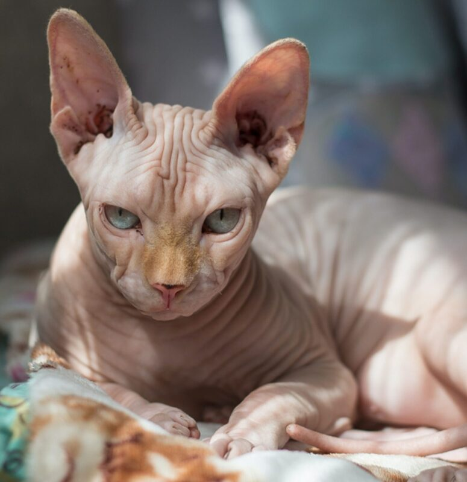
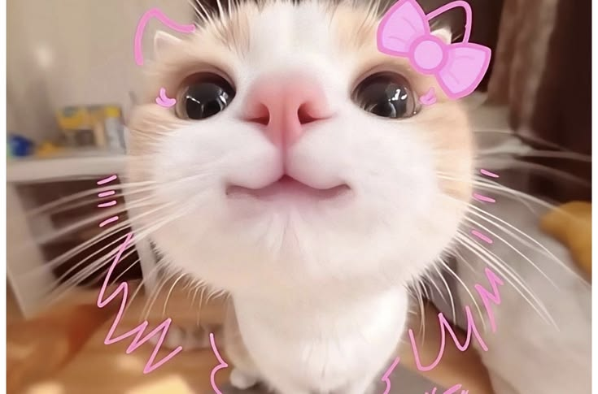
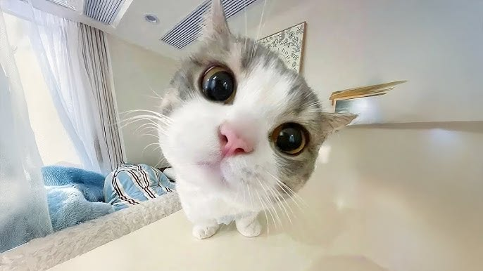
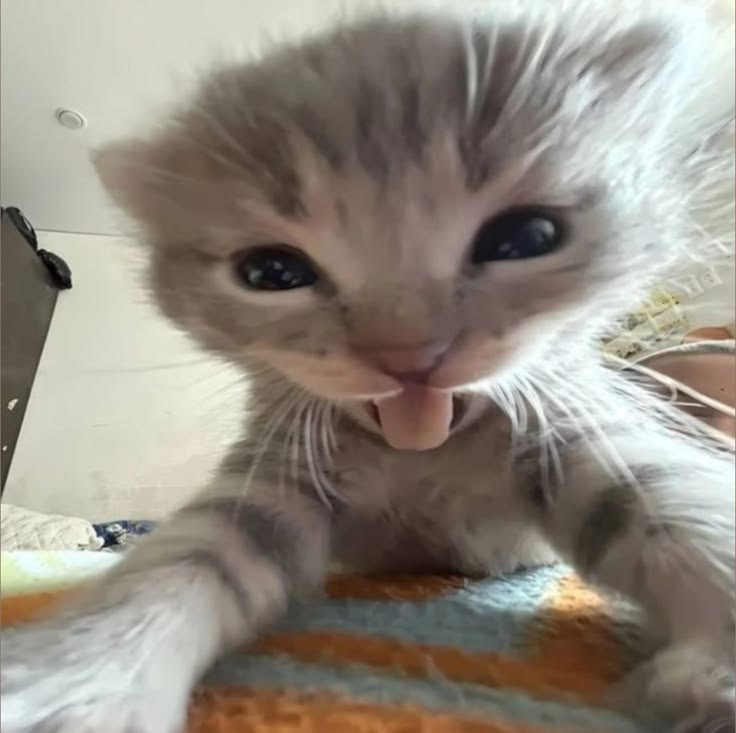

Su nombre científico es Felis catus
Los gatitos son los seres mas hermosos del mundo, son tiernos, suaves y muy lindos. Ademas de que son muy juguetones y divertidos.
Cada raza de gato puede mostrar comportamientos únicos. Por ejemplo, los abisinios son activos y enérgicos, mientras que los persas y los escoceses suelen ser más relajados.
Los gatos siameses son conocidos por ser inteligentes y vocales, y suelen maullar en voz alta si se sienten ignorados.
Los gatos mestizos generalmente se clasifican por la longitud de su pelaje, ya sea como domésticos de pelo corto o domésticos de pelo largo. Los gatos con pelo más largo necesitan
más aseo para evitar enredos. Algunas razas, como el devon rex, tienen un pelaje rizado y más corto debido a un cambio genético. Otros, como el sphynx, no tienen pelaje en absoluto.
Los gatos envejecen mucho más rápido que las personas. El primer año de vida de un gato equivale a unos 18 años humanos. Después de eso, cada año del gato es de 3 a 5 años humanos.
Algunos datos curiosos de los michis:
- Los gatos tienen una excelente visión. Pueden ver más detalles que los perros, lo que les ayuda a calcular con precisión
la velocidad y la distancia. Esta es una habilidad importante para los cazadores. Con poca luz, los gatos ven 6 veces mejor que las personas, por lo que la gente suele decir que los gatos ven en la oscuridad.
- Los gatos también tienen mejor audición que las personas e, incluso, que la mayoría de los perros. Los oídos les ayudan a localizar los sonidos, lo que es útil para cazar. Cuando oyen algo, los gatos suelen
girar la cabeza para averiguar de dónde proviene el sonido.


